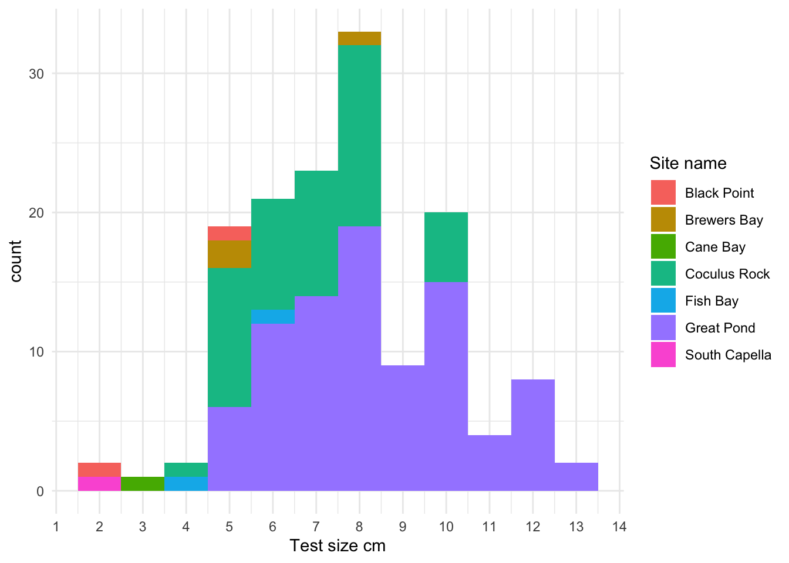

| Transects | Sites |
|---|---|
| 9 | 33 |
TCRMP 2023 Fish QAQC
Sarah Heidmann
2024-09-17
QAQC for TCRMP fish data for 2023. Suggestions for additions and improvement are welcomed.
Luckily, the data entry system catches a lot of easy mistakes like mispellings. We just have to go through the mistakes it might not catch. When we catch some that are fixable, change online and export again, or if the online database has already been cleared, change directly in the data.
Overview
How big are the datasets?
Transects have 6644 transect-species. Rovers have 3202 rover-species.
Do we have all the transects? (should have 9 transects each at 33 sites)
Those with less than 9 transects are below.
Do we have all the rovers? (should have 3 reps each at 33 sites and maybe 1 at Ginsburg’s Fringe)
| Rovers | Sites |
|---|---|
| 3 | 33 |
Those with less than 3 rovers are below.
Date ranges
Fish transects took place between dates: 2023-08-25, 2024-03-13
Diademas took place between dates: 2023-08-25, 2024-03-13
Fish rovers took place between dates: 2023-08-25, 2024-03-15
Abundance
Transect Abundance
There were 3.9% of transect species flagged on abundance.
Which species were most frequently flagged? We might want to change the max number on these.
Which observers had the most flags? They might be overestimating numbers.
Rover Abundance
There were 2.8% of rover species flagged on abundance.
Which species were most frequently flagged? We might want to change the max number on these.
Which observers had the most flags? They might be overestimating numbers.
Transect Sizing
We use size bins to estimate fish lengths, and we have a maximum and minimum size guideline for each species. An observation is flagged if the small end of the bin is larger than the max size for the species, or the large end of the bin is smaller than the min size for the species.
There were 0.5% of transect observations flagged on size.
Which species were most frequently flagged? We might want to change the size guidelines on these.
Which observers had the most flags? They might need some sizing practice.
*TODO: Plot observer size frequencies
*TODO: species richness by observer
Rare Fish
What species had the fewest observations (bottom 50)? Check for mistaken identity.
If you want to investigate, here’s the identifying info.
Did we see any Nassau grouper in transects?
Did we see any Nassau grouper in rovers?
Diadema
Overview
Do we have all the transects? (should have 9 transects each at 33 sites)
| Transects | Sites |
|---|---|
| 7 | 3 |
| 8 | 2 |
| 9 | 28 |
Those with less than 9 transects are below.
Diadema Abundance
Diadema Sizing
Were there any Diadema bigger than 15 cm?
Let’s look at Diadema size frequency, colored by site.
